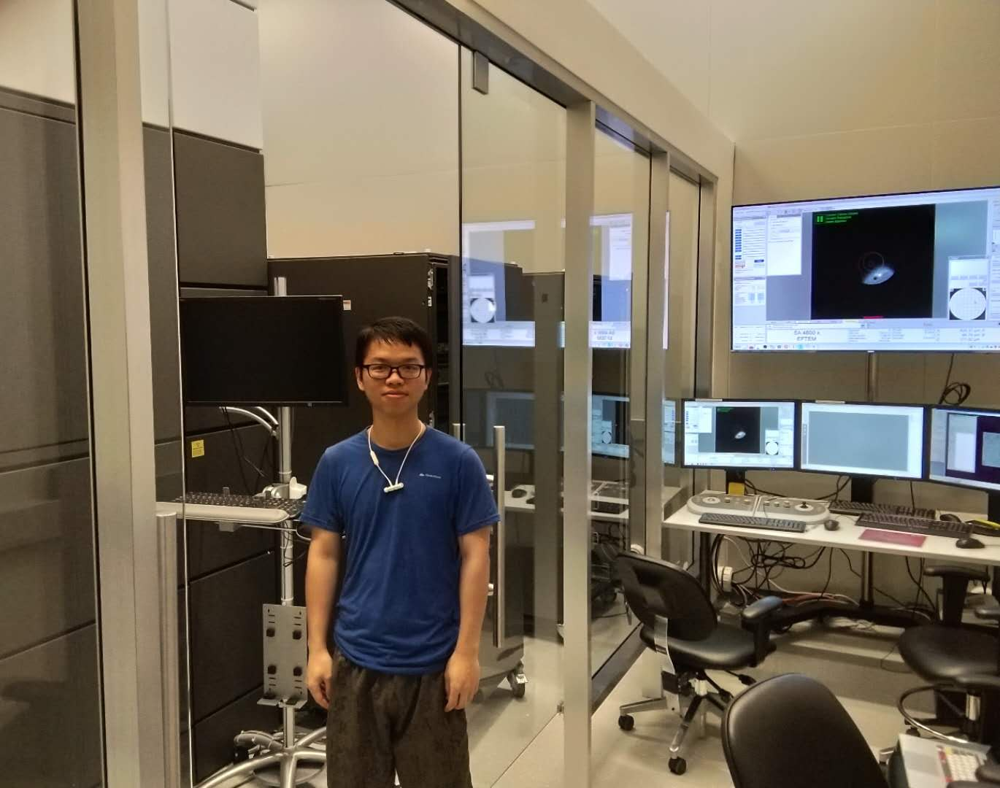

My research focuses on using chemical biology and metabolic labeling to engineer immune cells, study cell-cell interactions, and deliver therapeutic molecules. I’m particularly interested in modulating red blood cells and dendritic cells for applications in immunotherapy and disease monitoring. Below, you’ll find an overview of current and past projects, organized by research theme.
Driven by the belief that structure underlies function, I became interested in protein structure and joined Prof. Congzhao Zhou’s lab in the Department of Biology during my undergraduate. There, I gained hands-on experience in molecular biology and protein crystallography. I worked on two projects: one involving the structural study of the LicA-drug complex, where I expressed and purified LicA protein in E. coli and obtained crystals via the hanging drop vapor diffusion method; the other involved constructing a recombinant vector for an ABC transporter using homologous recombination.
In the summer of 2019, I joined Prof. Nieng Yan’s lab at Princeton, where I advanced my skills in membrane protein structural biology. I constructed plasmids with different tags for a membrane protein, expressed them in HEK293 cells, and supported cryo-EM studies, including reconstitution in nanodiscs and data collection using Relion. I also performed overlap PCR to generate protein mutants for structural analysis.
Crystals of apo-form LicA protein
Photo with cryo-EM in Princeton
After a year of molecular biology training, I joined Prof. Yuanzeng Min’s lab to explore chemical strategies for cancer therapy. My background helped streamline protocols such as antigen extraction and nanoparticle preparation. I led two interdisciplinary projects: one focused on developing a cancer cell antigen–based colloidal gel for immunotherapy, which I optimized and tested in a 4T1 breast cancer model; the other involved engineering red blood cells for type 1 diabetes treatment using click chemistry and evaluating their function in NOD mice. During the pandemic, I co-authored a review and collaborated on projects involving CRISPR and organic synthesis. Regular literature reading continues to spark new ideas, including combining solid-phase synthesis with chemotherapy and applying proteoliposomes to cancer immunotherapy.
The semisolid nanogel formed from two kinds of liquid nanoparticle solution.